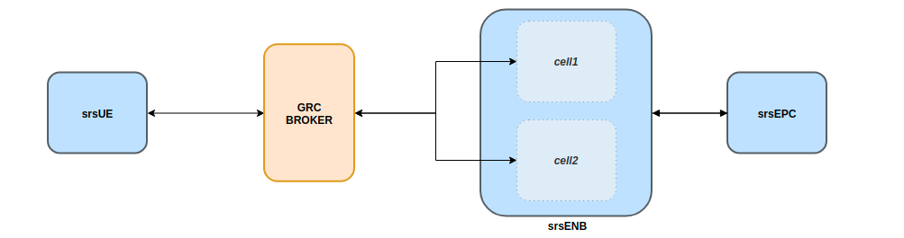
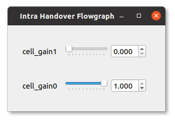
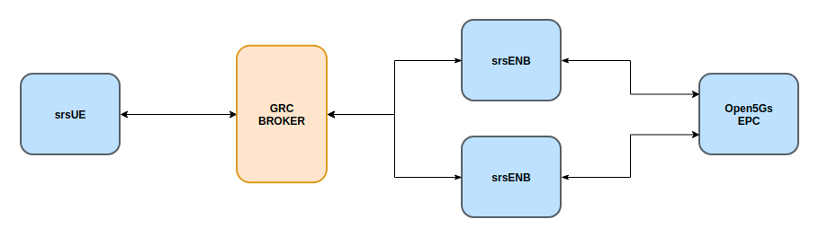
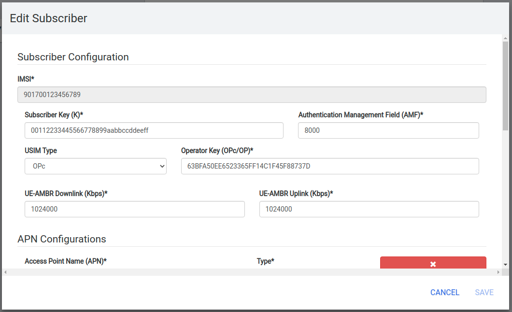

Intra-eNB & S1 Handover
srsRAN 4G Release 20.10 or later is required to run the following applications
Introduction
This application note focuses on mobility and handover. Specifically, we show how to configure an end-to-end network to support user-controlled handover. We address both intra-eNB and S1 handover using srsRAN 4G with ZeroMQ-based RF emulation and we use the GNURadio Companion as a broker for controlling cell gains to trigger handover. Creating an E2E network using ZMQ and adding GRC functionality is demonstrated in our ZMQ App Note.
Hardware & Software Required
Both Intra-eNB and S1 handover have the following hardware and software requirements:
A PC/ Laptop running a Linux based OS with the latest version of srsRAN 4G installed and built.
ZMQ installed and working with srsRAN 4G.
GNU-Radio Companion, which can be downloaded from this link.
Fully up to date drivers & dependencies.
The following command will ensure the correct dependencies are installed (Ubuntu only):
sudo apt-get install cmake libfftw3-dev libmbedtls-dev libboost-program-options-dev libconfig++-dev libsctp-dev
For a full guide on installing srsRAN 4G see the installation guide. The ZMQ app note shows how to correctly install and run ZMQ.
If you have had to install or update your drivers and/or dependencies without having re-built srsRAN 4G then you will need to do so to ensure srsRAN 4G picks up on the new/ updated drivers.
To make a clean build execute the following commands in your terminal:
cd ./srsRAN_4G/build
rm CMakeCache.txt
make clean
cmake ..
make
Your hardware and drivers should now be working correctly and be ready to use correctly with srsRAN 4G.
Intra-eNB Handover
Intra-eNB Handover describes the handover between cells when a UE moves from one sector to another sector which are managed by the same eNB. The following steps show how ZMQ and GRC can be used with srsRAN 4G to demonstrate such a handover.
The following figure shows the overall architecture used:

This set-up will allow intra-frequency intra-enb handover.
Note, ZMQ elements have not been included here so as to simplify the diagram, although they do form a key aspect of this implementation.
srsRAN 4G Set-Up
To enable the successful execution of intra-eNB handover the configuration files of the eNB, radio resources and the UE must be modified.
eNB:
In the eNB the RF Device and Args should be set so that ZMQ is used and two Tx/Rx TCP port pairings are created for the UL & DL of each cell.
The following example shows how this is done:
#####################################################################
[rf]
#dl_earfcn = 3350
tx_gain = 80
rx_gain = 40
# Example for ZMQ-based operation with TCP transport for I/Q samples
device_name = zmq
device_args = fail_on_disconnect=true,id=enb,tx_port0=tcp://*:2101,tx_port1=tcp://*:2201,rx_port0=tcp://localhost:2100,rx_port1=tcp://localhost:2200,id=enb,base_srate=23.04e6
#####################################################################
The following table should make clear how the TCP ports are allocated across the cells:
Port Direction |
cell1 Port # |
cell2 Port # |
|---|---|---|
Rx |
2100 |
2200 |
Tx |
2101 |
2201 |
The use of a clear labelling system for the ports is employed to allow for easier implementation of the GRC broker. By having the least significant unit of each Rx port be 0 and Tx port be 1 the flowgraph becomes easier to debug. The second most significant unit is used to indicate which cell the port belongs to.
Radio Resource (RR):
The rr.conf is where the cells (sectors) are added to the eNB, this is also where the handover flags are enabled. The following shows an example of the cell added to the existing rr.conf:
{
rf_port = 1;
cell_id = 0x02;
tac = 0x0007;
pci = 6;
root_seq_idx = 268;
dl_earfcn = 3350;
ho_active = true;
// Cells available for handover (in other eNB -- S1 handover)
meas_cell_list =
(
);
// Select measurement report configuration (all reports are combined with all measurement objects)
meas_report_desc =
(
{
eventA = 3
a3_offset = 6;
hysteresis = 0;
time_to_trigger = 480;
trigger_quant = "RSRP";
max_report_cells = 1;
report_interv = 120;
report_amount = 1;
}
);
meas_quant_desc = {
// averaging filter coefficient
rsrq_config = 4;
rsrp_config = 4;
};
}
Note, the TAC of the cells must match that of the MME, and the EARFCN must be the same across both cells and the UE. The PCI of each cell with the same EARFCN must be different, such that PCI%3 for the cells is not equal. It is also important to remember that the ho_active flag must be set to true in the default cell as well as the cell that has been added.
UE:
For the UE configuration, ZMQ must be set as the default device and the appropriate TCP ports set for Tx & Rx and the network namespace (netns) set. As well as this, the EARFCN value must be checked to ensure it is the same as that set for the cells in rr.conf. The following
example shows how the ue.conf file must be modified:
#####################################################################
[rf]
freq_offset = 0
tx_gain = 80
#rx_gain = 40
#srate = 11.52e6
# Example for ZMQ-based operation with TCP transport for I/Q samples
device_name = zmq
device_args = tx_port=tcp://*:2001,rx_port=tcp://localhost:2000,id=ue,base_srate=23.04e6
#####################################################################
[rat.eutra]
dl_earfcn = 3350
#nof_carriers = 1
#####################################################################
[gw]
netns = ue1
The default USIM configuration can be used, as it is already present in the user_db.csv file used by the EPC to authenticate the UE. If you want to use a custom USIM set up this will need to be added to the relevant section in the ue.conf file and reflected in the user_db.csv to ensure the UE is authenticated correctly.
Port Direction |
Port # |
|---|---|
Rx |
2000 |
Tx |
2001 |
Again for these ports the least significant unit is used to indicate whether the port is being used for Tx or Rx.
In short, the EARFCN values must be the same across the eNB, both cells and the UE, handover must be enabled in the RR config file and ZMQ made the default device for both the eNB and UE.
The full config files can be downloaded here:
GNU-Radio Companion
The GRC file can be downloaded here. Download and/ or save the file as a .grc file. Run with GNU-Radio Companion when needed.
The GRC Broker will be used to force handover between cells. This will be done by manually controlling the gain of each cell using variables and a slider. ZMQ REQ Source and REP Sink blocks will be used to link the flowgraph to the ZMQ instances of srsENB and srsUE. The following figure illustrated how this is done:

The following table again shows the clear breakdown of how the ports are assigned to each of the network elements:
Port Direction |
cell1 Port # |
cell2 Port # |
UE Port # |
|---|---|---|---|
Rx |
2100 |
2200 |
2000 |
Tx |
2101 |
2201 |
2001 |
The gain of cell2 is first set to 0, and cell1 to 1. These are then controlled via sliders and increased in steps of 0.1 to force handover once a connection has been established. Handover should occur once the gain of a cell is higher than the other, i.e. when the signal is stronger.
Running the Network
To instantiate the network correctly srsEPC is first run, then srsENB and finally srsUE. Once all three are running the GRC Broker should be run from GNU-Radio. The UE should then connect to the network, with the UL & DL passing through the broker. You should have already set up a network namespace for the UE, as described in the ZMQ App Note.
EPC:
To initiate the EPC, simply run the following command:
sudo srsepc
The EPC should display the following:
Built in Release mode using commit 7e60d8aae on branch next.
--- Software Radio Systems EPC ---
Reading configuration file /etc/srsran_4g/epc.conf...
HSS Initialized.
MME S11 Initialized
MME GTP-C Initialized
MME Initialized. MCC: 0xf901, MNC: 0xff70
SPGW GTP-U Initialized.
SPGW S11 Initialized.
SP-GW Initialized.
eNB:
Once the EPC is running, the eNB can by run using this command:
sudo srsenb
You should then see the following in the console:
--- Software Radio Systems LTE eNodeB ---
Reading configuration file /etc/srsran_4g/enb.conf...
Built in Release mode using commit 7e60d8aae on branch next.
Opening 2 channels in RF device=zmq with args=fail_on_disconnect=true,id=enb,tx_port0=tcp://*:2101,tx_port1=tcp://*:2201,rx_port0=tcp://localhost:2100,rx_port1=tcp://localhost:2200,id=enb,base_srate=23.04e6
CHx base_srate=23.04e6
CHx id=enb
Current sample rate is 1.92 MHz with a base rate of 23.04 MHz (x12 decimation)
CH0 rx_port=tcp://localhost:2100
CH0 tx_port=tcp://*:2101
CH0 fail_on_disconnect=true
CH1 rx_port=tcp://localhost:2200
CH1 tx_port=tcp://*:2201
Current sample rate is 11.52 MHz with a base rate of 23.04 MHz (x2 decimation)
Current sample rate is 11.52 MHz with a base rate of 23.04 MHz (x2 decimation)
Setting frequency: DL=2630.0 Mhz, UL=2510.0 MHz for cc_idx=0
Setting frequency: DL=2630.0 Mhz, UL=2510.0 MHz for cc_idx=1
==== eNodeB started ===
Type <t> to view trace
The EPC console should then display a confirmation that the eNB cas connected:
Received S1 Setup Request.
S1 Setup Request - eNB Name: srsenb01, eNB id: 0x19b
S1 Setup Request - MCC:901, MNC:70
S1 Setup Request - TAC 7, B-PLMN 0x9f107
S1 Setup Request - Paging DRX v128
Sending S1 Setup Response
UE:
The UE now needs to be run, this can be done with the following command:
sudo srsue
The UE console should then display this:
Reading configuration file /etc/srsran_4g/ue.conf...
Built in Release mode using commit 7e60d8aae on branch next.
Opening 1 channels in RF device=zmq with args=tx_port=tcp://*:2001,rx_port=tcp://localhost:2000,id=ue,base_srate=23.04e6
CHx base_srate=23.04e6
CHx id=ue
Current sample rate is 1.92 MHz with a base rate of 23.04 MHz (x12 decimation)
CH0 rx_port=tcp://localhost:2000
CH0 tx_port=tcp://*:2001
Waiting PHY to initialize ... done!
Attaching UE...
Current sample rate is 1.92 MHz with a base rate of 23.04 MHz (x12 decimation)
Current sample rate is 1.92 MHz with a base rate of 23.04 MHz (x12 decimation)
GRC:
Once all three network elements have been successfully initiated, the Broker can be run. This is done in the same way as any other GRC Flowgraph. Once successful, a pop up window should display the interactive slider for controlling the gain of the two cells.

Confirming Connection
Once the broker has been run, a successful attach should be made and the network should be up and running fully. To confirm this, check the appropriate messages are displayed in the console.
EPC Attach:
If the attach is successful the EPC should give the following readout:
Initial UE message: LIBLTE_MME_MSG_TYPE_ATTACH_REQUEST
Received Initial UE message -- Attach Request
Attach request -- M-TMSI: 0xd1006989
Attach request -- eNB-UE S1AP Id: 1
Attach request -- Attach type: 1
Attach Request -- UE Network Capabilities EEA: 11110000
Attach Request -- UE Network Capabilities EIA: 01110000
Attach Request -- MS Network Capabilities Present: false
PDN Connectivity Request -- EPS Bearer Identity requested: 0
PDN Connectivity Request -- Procedure Transaction Id: 1
PDN Connectivity Request -- ESM Information Transfer requested: false
UL NAS: Received Identity Response
ID Response -- IMSI: 901700123456789
Downlink NAS: Sent Authentication Request
UL NAS: Received Authentication Response
Authentication Response -- IMSI 901700123456789
UE Authentication Accepted.
Generating KeNB with UL NAS COUNT: 0
Downlink NAS: Sending NAS Security Mode Command.
UL NAS: Received Security Mode Complete
Security Mode Command Complete -- IMSI: 901700123456789
Getting subscription information -- QCI 7
Sending Create Session Request.
Creating Session Response -- IMSI: 901700123456789
Creating Session Response -- MME control TEID: 1
Received GTP-C PDU. Message type: GTPC_MSG_TYPE_CREATE_SESSION_REQUEST
SPGW: Allocated Ctrl TEID 1
SPGW: Allocated User TEID 1
SPGW: Allocate UE IP 172.16.0.2
Received Create Session Response
Create Session Response -- SPGW control TEID 1
Create Session Response -- SPGW S1-U Address: 127.0.1.100
SPGW Allocated IP 172.16.0.2 to IMSI 901700123456789
Adding attach accept to Initial Context Setup Request
Sent Initial Context Setup Request. E-RAB id 5
Received Initial Context Setup Response
E-RAB Context Setup. E-RAB id 5
E-RAB Context -- eNB TEID 0x1; eNB GTP-U Address 127.0.1.1
UL NAS: Received Attach Complete
Unpacked Attached Complete Message. IMSI 901700123456789
Unpacked Activate Default EPS Bearer message. EPS Bearer id 5
Received GTP-C PDU. Message type: GTPC_MSG_TYPE_MODIFY_BEARER_REQUEST
Sending EMM Information
eNB Attach:
You will see the RACH and connection message on the eNB:
RACH: tti=341, cc=0, preamble=14, offset=0, temp_crnti=0x46
User 0x46 connected
UE Attach:
The UE console will display the following:
Found Cell: Mode=FDD, PCI=1, PRB=50, Ports=1, CFO=-0.2 KHz
Current sample rate is 11.52 MHz with a base rate of 23.04 MHz (x2 decimation)
Current sample rate is 11.52 MHz with a base rate of 23.04 MHz (x2 decimation)
Found PLMN: Id=90170, TAC=7
Random Access Transmission: seq=14, ra-rnti=0x2
Random Access Complete. c-rnti=0x46, ta=0
RRC Connected
Network attach successful. IP: 172.16.0.2
Software Radio Systems LTE (srsRAN 4G) 21/10/2020 12:47:43 TZ:0
The network is now ready for handover to be initiated and tested. To keep the UE from entering idle, you should send traffic between the UE and the eNB. This can be done with the following command:
sudo ip netns exec ue1 ping 172.16.0.1
Forcing Handover
Handover is simply forced by using the slider to change the gain variables within GRC. Once the handover is successful a message should be displayed by the UE acknowledging a successful handover.
GRC:
The Following steps outline how handover can be forced with GRC. Aagain, this is done using the sliders for the gain variables:
Set the gain of cell1 to 0.5
Slowly increase the gain of cell2 to above 0.5 and on to 1.
Wait for handover to be acknowledged.
Move the gain of cell1 to 0.
UE Console:
If handover is successful you should see the following read out in the UE console:
Received HO command to target PCell=6, NCC=0
Random Access Transmission: seq=3, ra-rnti=0x2
Random Access Complete. c-rnti=0x47, ta=0
HO successful
Handover can now be repeated as many times as needed by repeating the above steps.
S1 Handover
Note
srsEPC does not support handover via the S1 interface, as it is designed to be a lightweight core for network-in-a-box type deployments. To support S1 handover, a third party EPC must be used. We will use Open5GS for the purposes of this note, however any third-party EPC supporting S1 handover can be used.
S1 handover takes place over the S1-interface as a UE transitions from the coverage of one eNB to the next. This differs from intra-enb handover as the UE is leaving the coverage of all sectors in an eNBs coverage, it is a handover to a new eNB. The following steps outline how this can be demonstrated using srsUE, srsENB and a third-party open source core. In this case the EPC from Open5GS is used. Other third party options would also work in this case, so long as they support S1 handover.
The following diagram outlines the network architecture:

Open5GS EPC
The Open5GS EPC is an open source core network solution which is inter-operable with srsRA 4G. The software can be installed from packages if using Ubuntu, as shown via the open5GS docs. The EPC, and the rest of the Open5GS applications, run out of the box and only require minor configuration for use with srsRAN 4G.
EPC Set-Up
The EPC needs to be configured for use with srsRAN 4G. The only changes required are to the MME configuration and adding the UE to the user database.
MME Config:
In the file mme.yaml, the TAC must be changed to 7, this is the standard configuration for srsRAN 4G. You could also leave these settings as they are and configure the srsRAN 4G elements instead.
The following shows the MME configuration used:
mme:
freeDiameter: /etc/freeDiameter/mme.conf
s1ap:
- addr: 127.0.0.2
gtpc:
- addr: 127.0.0.2
gummei:
plmn_id:
mcc: 901
mnc: 70
mme_gid: 2
mme_code: 1
tai:
plmn_id:
mcc: 901
mnc: 70
tac: 7
security:
integrity_order : [ EIA2, EIA1, EIA0 ]
ciphering_order : [ EEA0, EEA1, EEA2 ]
network_name:
full: Open5GS
mme_name: open5gs-mme0
For reference, this configuration can be found from line 204 to 226.
Subscriber List:
Adding subscribers to the network is done via the web-UI provided by open5GS. Their documentation outlines how this is done here, under the section Register Subscriber Information.
First open the UI, found at http://localhost:3000, and enter the credentials found in the UE configuration file (ue.conf). The following credentials are used:

Note, the first five digits (PLMN) in the IMSI to 90170, and OPc (Milenage Authentication) is being used. This differs from the USIM configuration found in ue.conf, the changes made here will later be reflected in the ue.conf file. The IMSI is edited to reflect the values used for the MCC and MNC. Milenage is used here to show how the sim credentials can be changed to suit certain use-cases.
srsRAN 4G Set-Up
To ensure srsRAN 4G is correctly configured to implement S1 Handover, changes must be made to the UE and eNB configurations.
UE:
As previously outlined, the USIM credentials in the configuration file must be modified. The following sections taken from the config file show the sections that need to be modified:
#####################################################################
[rf]
freq_offset = 0
tx_gain = 80
#rx_gain = 40
#srate = 11.52e6
# Example for ZMQ-based operation with TCP transport for I/Q samples
device_name = zmq
device_args = tx_port=tcp://*:2001,rx_port=tcp://localhost:2000,id=ue,base_srate=23.04e6
#####################################################################
[rat.eutra]
dl_earfcn = 3350
#nof_carriers = 1
#####################################################################
[gw]
netns = ue1
#####################################################################
[usim]
mode = soft
algo = milenage
opc = 63BFA50EE6523365FF14C1F45F88737D
k = 00112233445566778899aabbccddeeff
imsi = 901700123456789
imei = 353490069873319
#reader =
#pin = 1234
The downlink EARFCN is set to 3350 for this application, this is matched across the rest of the network. This sets the LTE Band and carrier frequency for the UE and eNB(s), they must match so that a connection can be successfully established and held. The changes made when adding the UE to the subscriber list in the EPC are also shown here, the IMSI now leads with the correct PLMN code, and the authentication algorithm is set to milenage; the opc is uncommented to enable this.
eNB:
For the eNB config the PLMN must be changed, the MME address must also be changed to that of the MME associated with the Open5GS EPC. The following are the changes made to the enb.conf file:
[enb]
enb_id = 0x19B
mcc = 901
mnc = 70
mme_addr = 127.0.0.2
gtp_bind_addr = 127.0.1.1
s1c_bind_addr = 127.0.1.1
n_prb = 50
#tm = 4
#nof_ports = 2
eNB RR:
The rr.conf file must also be edited to allow for S1 Handover. To do this, two new rr.conf files are created, named rr1.conf and rr2.conf. As there will be two eNBs, there is an rr.conf associated with each. It is recommend that the existing rr.conf is simply copied into two new files, and only the cell_list changed for each of the new filles. This should help to avoid misconfiguration.
rr1.conf:
After the rr.conf has been copied to a new file (in the same location as the existing configuration files), the cell list must be edited. The following snippet shows this:
cell_list =
(
{
// rf_port = 0;
cell_id = 0x01;
tac = 0x0007;
pci = 1;
root_seq_idx = 204;
dl_earfcn = 3350;
//ul_earfcn = 21400;
ho_active = true;
//meas_gap_period = 0; // 0 (inactive), 40 or 80
//meas_gap_offset_subframe = [6, 12, 18, 24, 30];
// target_pusch_sinr = -1;
// target_pucch_sinr = -1;
// enable_phr_handling = false;
// min_phr_thres = 0;
// allowed_meas_bw = 6;
// t304 = 2000; // in msec. possible values: 50, 100, 150, 200, 500, 1000, 2000
// CA cells
scell_list = (
// {cell_id = 0x02; cross_carrier_scheduling = false; scheduling_cell_id = 0x02; ul_allowed = true}
)
// Cells available for handover
meas_cell_list =
(
{
eci = 0x19B01;
dl_earfcn = 3350;
pci = 1;
//direct_forward_path_available = false;
//allowed_meas_bw = 6;
//cell_individual_offset = 0;
},
{
eci = 0x19C01;
dl_earfcn = 3350;
pci = 6;
}
);
// Select measurement report configuration (all reports are combined with all measurement objects)
meas_report_desc =
(
{
eventA = 3
a3_offset = 6;
hysteresis = 0;
time_to_trigger = 480;
trigger_quant = "RSRP";
max_report_cells = 1;
report_interv = 120;
report_amount = 1;
}
);
meas_quant_desc = {
// averaging filter coefficient
rsrq_config = 4;
rsrp_config = 4;
};
}
// Add here more cells
);
Here the TAC is set to 7, and the DL EARFCN is set to 3350. To ensure S1 Handover is successful the cell(s) associated with the second eNB must be added to the meas_cell_list. This can be seen here where a cell with eci = 0x19C01 is included, this is the cell associated with the second eNB. The cell with eci = 0x19B01 is the cell active on the current eNB. The DL EARFCN is the same across both.
rr2.conf:
Similarly to rr1.conf, a file rr2.conf must be created where the other configuration files are found and the cell_list updated:
cell_list =
(
{
// rf_port = 0;
cell_id = 0x01;
tac = 0x0007;
pci = 6;
root_seq_idx = 264;
dl_earfcn = 3350;
//ul_earfcn = 21400;
ho_active = true;
//meas_gap_period = 0; // 0 (inactive), 40 or 80
//meas_gap_offset_subframe = [6, 12, 18, 24, 30];
// target_pusch_sinr = -1;
// target_pucch_sinr = -1;
// enable_phr_handling = false;
// min_phr_thres = 0;
// allowed_meas_bw = 6;
// t304 = 2000; // in msec. possible values: 50, 100, 150, 200, 500, 1000, 2000
// CA cells
scell_list = (
// {cell_id = 0x02; cross_carrier_scheduling = false; scheduling_cell_id = 0x02; ul_allowed = true}
)
// Cells available for handover
meas_cell_list =
(
{
eci = 0x19B01;
dl_earfcn = 3350;
pci = 1;
//direct_forward_path_available = false;
//allowed_meas_bw = 6;
//cell_individual_offset = 0;
},
{
eci = 0x19C01;
dl_earfcn = 3350;
pci = 6;
}
);
// Select measurement report configuration (all reports are combined with all measurement objects)
meas_report_desc =
(
{
eventA = 3
a3_offset = 6;
hysteresis = 0;
time_to_trigger = 480;
trigger_quant = "RSRP";
max_report_cells = 1;
report_interv = 120;
report_amount = 1;
}
);
meas_quant_desc = {
// averaging filter coefficient
rsrq_config = 4;
rsrp_config = 4;
};
}
// Add here more cells
);
It is possible to enable both intra-eNB and S1 handover at the same time by combining the rr configuration used for intra-enb HO with those shown above. Although, that will not be covered in this application note.
Using Scripts
To efficiently instantiate and run the network for S1 HO, Bash scripts will be employed. Scripts will be used to run the two eNBs and the UE. The scripts should be created in the same folder as the other configuration files to avoid any errors when passing file names and when running them.
eNB 1:
The first eNB will need to have ZMQ set as the RF device, and the ports assigned. As well as this, the new rr1.conf file must be set as the radio resource configuration to be used:
#!/bin/bash
LOG_ARGS="--log.all_level=debug"
PORT_ARGS="tx_port=tcp://*:2101,rx_port=tcp://localhost:2100"
ZMQ_ARGS="--rf.device_name=zmq --rf.device_args=\"${PORT_ARGS},id=enb,base_srate=23.04e6\""
OTHER_ARGS="--enb_files.rr_config=rr1.conf"
sudo srsenb enb.conf ${LOG_ARGS} ${ZMQ_ARGS} ${OTHER_ARGS} $@
Note how the logging level is also set here using the script. Every argument in the configuration file can be changed via the command line when the eNB is instantiated, this shows how it is done when using a script with the logging as the example.
eNB 2:
For the second eNB we will need to set the ZMQ device, with the correct ports as above. The rr2.conf file must also be given as the rr configuration file to be used. Additional steps must be taken with this eNB so as to allow it to be instantiated correctly. The eNB ID must be changed, and the GTP and S1C bind addresses must be modified. This is done with the following script:
#!/bin/bash
LOG_ARGS="--log.all_level=info"
PORT_ARGS="tx_port=tcp://*:2201,rx_port=tcp://localhost:2200"
ZMQ_ARGS="--rf.device_name=zmq --rf.device_args=\"${PORT_ARGS},id=enb,base_srate=23.04e6\""
OTHER_ARGS="--enb_files.rr_config=rr2.conf --enb.enb_id=0x19C --enb.gtp_bind_addr=127.0.1.2 --enb.s1c_bind_addr=127.0.1.2"
sudo srsenb enb.conf ${LOG_ARGS} ${ZMQ_ARGS} ${OTHER_ARGS} $@
UE:
The script for the UE will be used to set the ZMQ device and ports, while also being used to set-up the network namespace used for the UE:
#!/bin/bash
LOG_PARAMS="--log.all_level=debug"
PORT_ARGS="tx_port=tcp://*:2001,rx_port=tcp://localhost:2000"
ZMQ_ARGS="--rf.device_name=zmq --rf.device_args=\"${PORT_ARGS},id=ue,base_srate=23.04e6\" --gw.netns=ue1"
## Create netns for UE
ip netns list | grep "ue1" > /dev/null
if [ $? -eq 1 ]; then
echo creating netspace ue1...
sudo ip netns add ue1
if [ $? -ne 0 ]; then
echo failed to create netns ue1
exit 1
fi
fi
sudo srsue ue.conf ${LOG_PARAMS} ${ZMQ_ARGS} --rat.eutra.dl_earfcn=3350 "$@"
The UE does not require any other parameters to be passed when it is instantiated.
GNU-Radio
The GRC file can be downloaded here. Download and/ or save the file as a .grc file. Run with GNU-Radio Companion when needed.
The GRC Broker used here is the same as that used for intra-eNB HO. The following figure shows the flowgraph used:
The following outlines which ports belong to which network element:
Port Direction |
eNB 1 Port # |
eNB 2 Port # |
UE Port # |
|---|---|---|---|
Rx |
2100 |
2200 |
2000 |
Tx |
2101 |
2201 |
2001 |
Running the Network
To run the network the following steps must be taken:
Run the scripts to start each of the network elements
Run the GRC Broker to connect the UE to the eNB(s)
The eNB that the UE connects to first is known as the Source eNB, in this case it will be eNB 1. The Target eNB will be eNB 2, i.e. the eNB that the UE will be transferred to.
Confirming Connection
To confirm the initial connection has been successful look for the following readouts on the relevant consoles.
Source eNB:
--- Software Radio Systems LTE eNodeB ---
Reading configuration file enb.conf...
Built in Release mode using commit 7e60d8aae on branch next.
Opening 1 channels in RF device=zmq with args="tx_port=tcp://*:2101,rx_port=tcp://localhost:2100,id=enb,base_srate=23.04e6"
CHx base_srate=23.04e6"
CHx id=enb
Current sample rate is 1.92 MHz with a base rate of 23.04 MHz (x12 decimation)
CH0 rx_port=tcp://localhost:2100
CH0 tx_port=tcp://*:2101
Current sample rate is 11.52 MHz with a base rate of 23.04 MHz (x2 decimation)
Current sample rate is 11.52 MHz with a base rate of 23.04 MHz (x2 decimation)
Setting frequency: DL=2630.0 Mhz, UL=2510.0 MHz for cc_idx=0
==== eNodeB started ===
Type <t> to view trace
RACH: tti=341, cc=0, preamble=38, offset=0, temp_crnti=0x46
User 0x46 connected
Target eNB:
--- Software Radio Systems LTE eNodeB ---
Reading configuration file enb.conf...
Built in Release mode using commit 7e60d8aae on branch next.
Opening 1 channels in RF device=zmq with args="tx_port=tcp://*:2201,rx_port=tcp://localhost:2200,id=enb,base_srate=23.04e6"
CHx base_srate=23.04e6"
CHx id=enb
Current sample rate is 1.92 MHz with a base rate of 23.04 MHz (x12 decimation)
CH0 rx_port=tcp://localhost:2200
CH0 tx_port=tcp://*:2201
Current sample rate is 11.52 MHz with a base rate of 23.04 MHz (x2 decimation)
Current sample rate is 11.52 MHz with a base rate of 23.04 MHz (x2 decimation)
Setting frequency: DL=2630.0 Mhz, UL=2510.0 MHz for cc_idx=0
==== eNodeB started ===
Type <t> to view trace
Note, you wont see anything on this eNB console until handover has successfully been made between the eNBs.
UE:
Reading configuration file ue.conf...
Built in Release mode using commit 7e60d8aae on branch next.
Opening 1 channels in RF device=zmq with args="tx_port=tcp://*:2001,rx_port=tcp://localhost:2000,id=ue,base_srate=23.04e6"
CHx base_srate=23.04e6"
CHx id=ue
Current sample rate is 1.92 MHz with a base rate of 23.04 MHz (x12 decimation)
CH0 rx_port=tcp://localhost:2000
CH0 tx_port=tcp://*:2001
Waiting PHY to initialize ... done!
Attaching UE...
Current sample rate is 1.92 MHz with a base rate of 23.04 MHz (x12 decimation)
Current sample rate is 1.92 MHz with a base rate of 23.04 MHz (x12 decimation)
.
Found Cell: Mode=FDD, PCI=1, PRB=50, Ports=1, CFO=-0.2 KHz
Current sample rate is 11.52 MHz with a base rate of 23.04 MHz (x2 decimation)
Current sample rate is 11.52 MHz with a base rate of 23.04 MHz (x2 decimation)
Found PLMN: Id=90170, TAC=7
Random Access Transmission: seq=38, ra-rnti=0x2
Random Access Complete. c-rnti=0x46, ta=0
RRC Connected
Network attach successful. IP: 10.45.0.7
nTp) 6/11/2020 15:36:1 TZ:0
You should now start to send traffic between the UE and the EPC, this is done via the following command:
sudo ip netns exec ue1 ping 10.45.0.1
This will stop the UE from timing out and keep the connection to the core open.
Forcing Handover
The network is now ready for handover to be forced, this is done in the same way as before using the GRC Broker:
Set the gain of the Source eNB from 1 to 0.5
Slowly increase the gain of the Target eNB from 0, to above 0.5, and on to 1.
Wait for handover to be acknowledged.
Move the gain of the Source eNB to 0.
If HO is successful the following will be seen on the relevant console outputs:
Source eNB:
Starting S1 Handover of rnti=0x46 to cellid=0x19c01.
Encoded varShortMAC: cellId=0x19b01, PCI=1, rnti=0x46 (7 bytes)
Disconnecting rnti=0x46.
Target eNB:
Received S1 HO Request
Received S1 MMEStatusTransfer
RACH: tti=3421, cc=0, preamble=20, offset=0, temp_crnti=0x47
Disconnecting rnti=0x47.
User 0x46 connected
UE:
Received HO command to target PCell=6, NCC=2
Random Access Transmission: seq=20, ra-rnti=0x2
Random Access Complete. c-rnti=0x46, ta=0
HO successful
This can be repeated as many times as needed by following the above steps.
Troubleshooting
Intra-eNB Handover
If the gains of the cells are changed too abruptly the handover messages will not have enough time to be exchanged successfully. Gradually moving the sliders between values is best practice when changing the gain values.
S1 Handover
Open5GS can also be installed from source, but it is easier to install from packages for this use-case.
Ensure the PLMN, TAC and EARFCN are correct across all relevant network elements, as this can cause the connection to fail or stop an attach occuring.